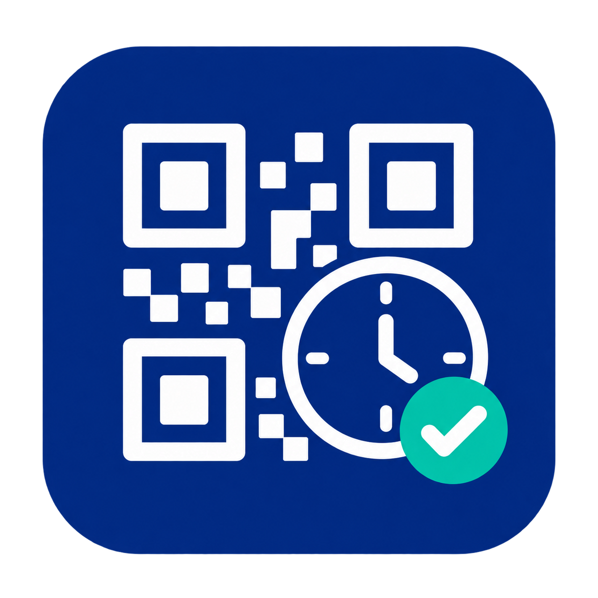

Secure employee QR check-in and check-out with weekly attendance reports, overtime visibility, exception controls, and payroll-preparation attendance exports.
Personal employee code and PIN, HTTPS-only public pages, trusted public-IP allowlists, signed actions, rate limits, and revocable remembered devices.
Create auditable attendance periods with planned hours, worked hours, scheduled work, outside-schedule work, shortfall, lateness, early leave, missing days, and missing check-outs.
Export locked attendance snapshots as UTF-8 CSV with in-schedule work, shortfall, and Odoo-approved overtime grouped by rate, including unpaid rate 0.
Draft — calculate and inspect source records.
Reviewed — confirm attendance exceptions.
Locked — freeze the reviewed attendance-input snapshot.
This Community-compatible core app prepares attendance totals and exports for payroll workflows. The exported metrics are inputs, not payable-hour decisions: leave/work-entry codes and country-specific rules remain in the payroll system. It does not generate payslips or calculate salary amounts. An Enterprise payroll connector can be installed as a separate bridge when required.
Dependencies: Attendances, Web, and Python qrcode (included in official Odoo 19 requirements). No clinic application, external attendance service, GPS collection, or employee portal account is required.